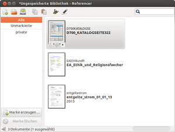
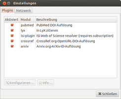
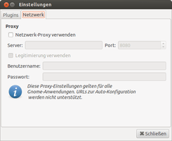

Referencer
Dieser Artikel wurde für die folgenden Ubuntu-Versionen getestet:
Ubuntu 16.04 Xenial Xerus
Zum Verständnis dieses Artikels sind folgende Seiten hilfreich:
Referencer  ist eine GNOME-Anwendung zur Verwaltung von Dokumenten (DMS – Dokument Management System). Sie kann aus den Metadaten eines Dokuments automatisch die Internet-Adresse (URL) auslesen, unter der dieses Dokument erhältlich ist.
ist eine GNOME-Anwendung zur Verwaltung von Dokumenten (DMS – Dokument Management System). Sie kann aus den Metadaten eines Dokuments automatisch die Internet-Adresse (URL) auslesen, unter der dieses Dokument erhältlich ist.
Sind keine Metadaten für ein Dokument vorhanden, so versucht Referencer, diese automatisch über arXiv-Datenbank (eine weltweite Dokumentendatenbank mit Metadaten für Texte aus der Mathematik, Informatik, Biologie und Physik) zu ermitteln oder die DOI (Digital Object Identifier) herauszufinden. Werden auf keinem Weg Metadaten gefunden, so kann man diese selbst hinzufügen.
Die Methode zur Organisation der Dokumente ist das Tagging. Vereinfacht gesagt, vergibt man damit Schlagworte zu einzelnen Dokumenten, um diese später besser wieder zu finden. Weiterhin unterstützt Referencer den Import aus Programmen wie BibTeX, Reference Manager und EndNote (die letzten beiden Programme sind kommerzielle DMS).
Leider wurde die Weiterentwicklung des Programms eingestellt. Alternativen sind im Artikel Literaturverwaltung zu finden.
Installation¶

Referencer ist den offiziellen Paketquellen enthalten. Es muss lediglich das folgende Paket installiert werden [1]:
referencer (universe)
 mit apturl
mit apturl
Paketliste zum Kopieren:
sudo apt-get install referencer
sudo aptitude install referencer
Siehe auch Problembehebung.
Verwendung¶
Nach Abschluss der Installation kann das Programm bei Ubuntu-Varianten mit einem Anwendungsmenü über "Büro -> Referencer" oder mit dem Befehl referencer gestartet werden [2].

Bei Referencer ist zu beachten, dass Dokumente nicht in ein Dokumenten-Archiv importiert werden, sondern lediglich eine Verknüpfung auf das Dokument gespeichert wird. Benennt man ein Dokument nach dem Import in Referencer um oder verschiebt es, so kann es nicht mehr gefunden werden! Über die Menüleiste "Bibliothek -> Speichern" legt man eine Datei an dem gewählten Ort ab, die als XML-Datei die gesetzten Eigenschaften und einen File-Deskriptor zum Dokument im Dateisystem enthält.
Bei Auswahl einer Marke (Schlagwort) im linke Fensterbereich werden nur die Dokumente angezeigt, die der jeweiligen Marke zugeordnet sind. Im linken Teil des Programmfensters ist die Liste aller erstellten Marken (siehe Erstellen von Marken).
Hinzufügen von Dateien/Ordnern¶
Über den Bereich "Dokumente" in der Menüleiste kann man Dateien und ganze Ordner hinzufügen. Diese werden im rechten Teil der Anwendung dargestellt. Die Eigenschaften des Dokuments erreicht man über das Kontextmenü  und "Eigenschaften" oder über die Menüleiste ("Dokumente -> Eigenschaften").
und "Eigenschaften" oder über die Menüleiste ("Dokumente -> Eigenschaften").
Erstellen von Marken¶
Neue Marken erstellt man über die Menüleiste "Marken -> Marke erzeugen". Man vergibt einen Namen und bestätigt mit der ⏎ -Taste.
Zuordnen/Entfernen von Marken¶
Man klickt mit der rechten Maustaste auf das zu bearbeitende Dokument und wählt dann im Kontextmenü unter "Marken" die gewünschten Marken aus.
Konfiguration¶
Die Einstellungen von Referencer sind unter "Bearbeiten -> Einstellungen" zu erreichen. Hier kann man einen Proxy für den Internetzugang und die Webdienste zur Abfrage der DOI-Metadaten und zur Suche der Metadaten einstellen.
|  |
| Webdienste |
|  |
| Proxy |
Problembehebung¶
Das Plugin, welches für das Abfragen von Daten aus dem Netz verantwortlich ist, scheint etwas in die Jahre gekommen zu sein und liefert unter Umständen eine Fehlermeldung wie <class xml.parsers.expat.ExpatError> o.ä. Eine Lösung ist die Installation folgender Programmbibliothek:
libgnomevfs2-extra
mit apturl
Paketliste zum Kopieren:
sudo apt-get install libgnomevfs2-extra
sudo aptitude install libgnomevfs2-extra
Kubuntu¶
KDE-Nutzer müssen zusätzlich das Programm Eye of GNOME installieren, damit Referencer lauffähig ist:
eog
mit apturl
Paketliste zum Kopieren:
sudo apt-get install eog
sudo aptitude install eog
Vorschau aktivieren¶
Es ist möglich, eine Dokument-Vorschau im Hauptfenster zu verwenden. GNOME-Nutzer erhalten diese automatisch. Wer KDE nutzt, sollte Dolphin starten und dann unter "Einstellungen -> Dolphin einrichten -> Allgemein -> Vorschauen" die jeweils gewünschte Vorschau auswählen und übernehmen.
 Programmübersicht
Programmübersicht- Erstellt mit Inyoka
-
 2004 – 2017 ubuntuusers.de • Einige Rechte vorbehalten
2004 – 2017 ubuntuusers.de • Einige Rechte vorbehalten
Lizenz • Kontakt • Datenschutz • Impressum • Serverstatus -
Serverhousing gespendet von